1st Service · 8:30 AM
Gather with us for worship and the Word of God.
Join either Sunday worship service, and contact us for current crusade and revival dates.
Join us at Ugunja-Ukwala Road for worship and teaching from the Word of God.
Gather with us for worship and the Word of God.
Join the church family for worship and teaching.

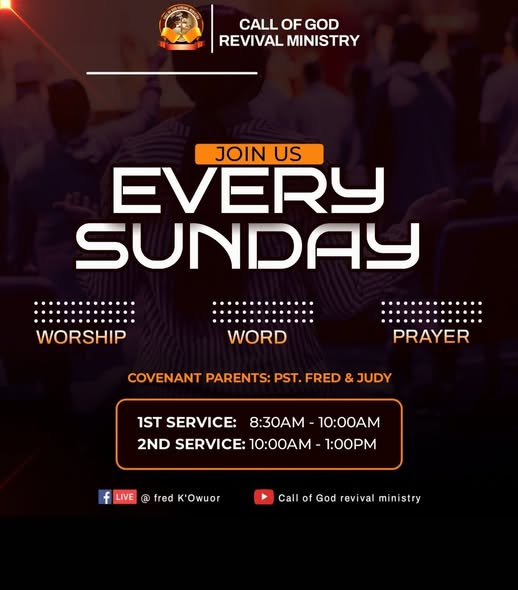
Regional evangelism missions and weekend revivals take place throughout the year. Dates vary, so contact the ministry for the next gathering.
For upcoming tent revivals and open-air meetings, call the administrative desk. Follow our YouTube channel for past revival conventions and live broadcast announcements.
Call +254 726 046000Watch on YouTubeScenes from services and ministry gatherings at Call of God Revival Ministry International.
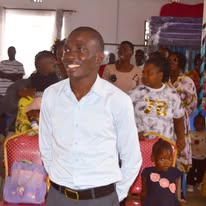
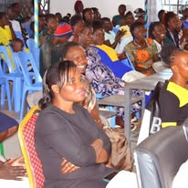
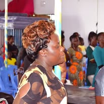

These flyers are from previous ministry events and are shared as memories, not as current schedules.
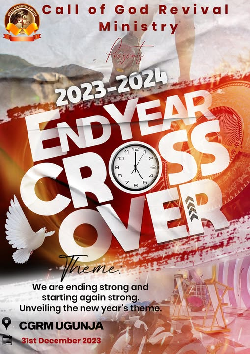
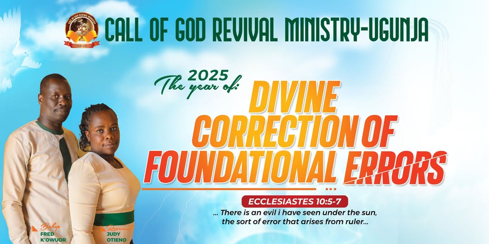
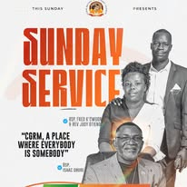
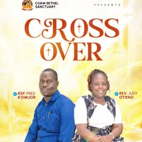
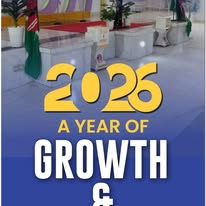
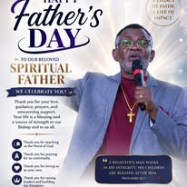
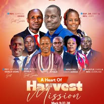
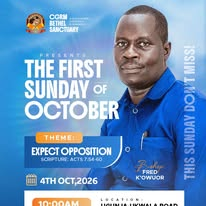